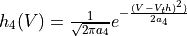
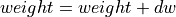

算法自定义¶
替代梯度算法¶
替代梯度算法最重要的过程即为使用用户自己的梯度函数替代计算图中原有的梯度函数，此处我们以STCA算法与STBP算法的差别举例。两个不同算法，在平台上以Pytorch后端进行实现时，仅有的差别在于，
STCA算法 1 中，梯度函数为:
而STBP算法 2 中我们选取的梯度函数为: 
@staticmethod
def backward(
ctx,
grad_output
):
input, = ctx.saved_tensors
grad_input = grad_output.clone()
temp = abs(input - ctx.thresh) < ctx.alpha # 根据STCA，采用了sign函数
# temp = torch.exp(-(input - ctx.thresh) ** 2 / (2 * ctx.alpha)) \ # 根据STBP所用反传函数
# / (2 * math.pi * ctx.alpha)
result = grad_input * temp.float()
return result, None, None
突触可塑性算法¶
在我们平台上实现了两种STDP学习算法，一种是在线STDP学习算法 3 ，一种是传统STDP学习算法 4 。
在线STDP学习算法¶
该算法的权重更新公式为 2 ：  权重归一化公式：
首先从 trainable_connection 中获取该学习算法训练的突触前神经元组以及突触后神经元组
preg = conn.pre_assembly
postg = conn.post_assembly
之后获取学习算法需要的参数在后端的名称，例如：输入脉冲，输出脉冲，连接权重引用了 Connection 中的获取名字的函数
pre_name = conn.get_input_name(preg, postg)
post_name = conn.get_target_output_name(postg)
weight_name = conn.get_weight_name(preg, postg)
再将算法需要用到的参数添加到后端
backend.add_variable(input_trace_name, backend._variables[pre_name].shape, value=0.0)
backend.add_variable(output_trace_name, backend._variables[post_name].shape, value=0.0)
backend.add_variable(dw_name, backend._variables[weight_name].shape, value=0.0)
之后将运算公式添加进后端
#dw = Apost * (output_spike * input_trace) – Apre * (output_trace * input_spike)
backend.add_operation(['input_trace_s', 'var_mult', input_trace_name, 'trace_decay'])
backend.add_operation(['input_temp', 'minus', 'spike', pre_name])
backend.add_operation([input_trace_name, 'var_linear', 'input_temp', 'input_trace_s', pre_name])
backend.add_operation(['output_trace_s', 'var_mult', output_trace_name, 'trace_decay'])
backend.add_operation(['output_temp', 'minus', 'spike', post_name])
backend.add_operation([output_trace_name, 'var_linear', 'output_temp', 'output_trace_s', post_name])
backend.add_operation(['pre_post_temp', 'mat_mult_pre', post_name, input_trace_name+'[updated]'])
backend.add_operation(['pre_post', 'var_mult', 'Apost', 'pre_post_temp'])
backend.add_operation(['post_pre_temp', 'mat_mult_pre', output_trace_name+'[updated]', pre_name])
backend.add_operation(['post_pre', 'var_mult', 'Apre', 'post_pre_temp'])
backend.add_operation([dw_name, 'minus', 'pre_post', 'post_pre'])
之后将更新权重的函数添加进后端
backend.register_standalone(None, self.nearest_online_stdp_weightupdate, [dw_name, weight_name])
权重更新代码：
with torch.no_grad():
weight.add_(dw)
权重归一化代码：
weight[...] = (self.w_norm * torch.div(weight, torch.sum(torch.abs(weight), 1, keepdim=True)))
weight.clamp_(0.0, 1.0)
- 1
Pengjie Gu et al. “STCA: Spatio-Temporal Credit Assignment with Delayed Feedback in Deep SpikingNeural Networks.” In:Proceedings of the Twenty-Eighth International Joint Conference on Artificial Intelligence, IJCAI-19. International Joint Conferences on Artificial Intelligence Organization, July 2019,pp. 1366–1372. doi:10.24963/ijcai.2019/189.
- 2(1,2)
Yujie Wu et al. “Spatio-Temporal Backpropagation for Training High-Performance Spiking Neural Networks” Front. Neurosci., 23 May 2018 | `doi:10.3389/fnins.2018.00331<https://doi.org/10.3389/fnins.2018.00331>`_
- 3
Sjöström J, Gerstner W. Spike-timing dependent plasticity[J]. Spike-timing dependent plasticity, 2010, 35(0): 0-0._
- 4
Gerstner W, Kempter R, van Hemmen JL, Wagner H. A neuronal learning rule for sub-millisecond temporal coding. Nature. 1996 Sep 5;383(6595):76-81. `doi: 10.1038/383076a0<https://doi.org/10.1038/383076a0>`_ . PMID: 8779718.